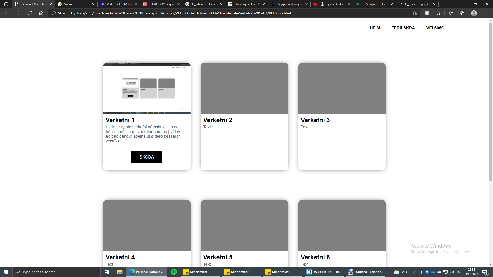
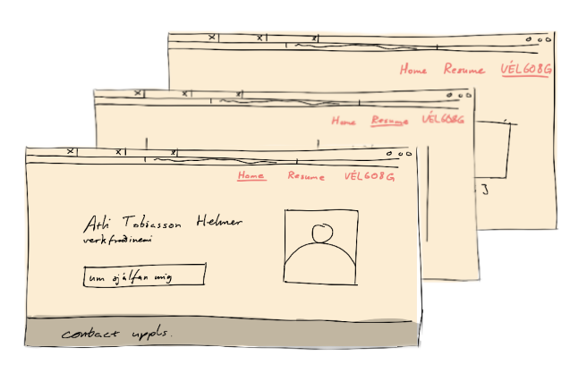

Fyrsta verkefnið í þessum áfanga gekk út á að undirbúa skjalasafn á formi vefsíðu. Þetta er hugsað fyrst og fremst fyrir þennan áfanga þar sem umsjónakennari getur farið yfir verkefnin en einnig nýtist þetta vel sem almenn persónuleg síða sem má nýta á allan máta.
Samkvæmt verkefnaseðli átti vefsíðan að innihalda heimasíðu með mynd og léttum texta um síðuna, ferilskrá sem bæði er hægt að skoða beint og hala niður sem 'pdf'-form. Aðaltilgangurinn er þó skjalasafn fyrir verkefnin sem eru í þessum áfanga. Það er síðasta slóðin og heitir hún 'VÉL608G' sem er nafn áfangans á táknmáli. Verkefnin eru geymd hér eins og nokkurs konar grein en hún á að veita lesenda fullnægjandi upplýsingar til að endurgera þau sjálfur. Fyrsta áskorun gerðar þessarar vefsíðu var að komast að því hvernig útlit hennar ætti að vera. Hægt er að velja tilbúin sniðmát á vefsíðum eins og 'html5up.net' (bennt á af umsjónakennara) en einnig má smíða vefsíðuna sjálfur frá grunni þó síðarnefnda aðferðin reynist erfiðari. Til allrar hamingju hefur höfundur vefsíðunnar ágætis reynslu með hugbúnaðinn í kring um vefsíðugerð (HTML og CSS) og treysti sér því að gera síðuna sína frá grunni. Fyrstu skrefin voru gerð á pappír. Meginsíðurnar þrjár voru teiknaðar eins og höfundurinn vildi hafa þær en útfrá þessum teikningum var síðan gerð. Þetta kallast viðmót (notendaviðmót) og ef þau eru vel gerð auðveldar það lesenda að fletta um síðuna.
Þessi vefsíða er mun einfaldari í útliti en flest sniðmát sem má velja úr. Auk hæfileikaskorts höfunds taldi höfundurinn að einfalt útlit passar betur við boðskap vefsíðunnar. Síða sem er mjög fögur en fær um það bil einn gest á mánuði (því hún er bara skjalasafn) skilar blendinni ímynd um hvert raunverulega mikilvægi hennar er.